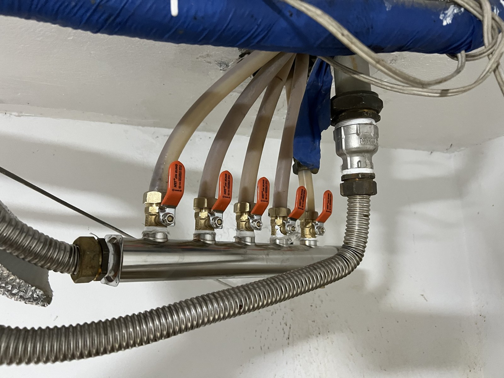
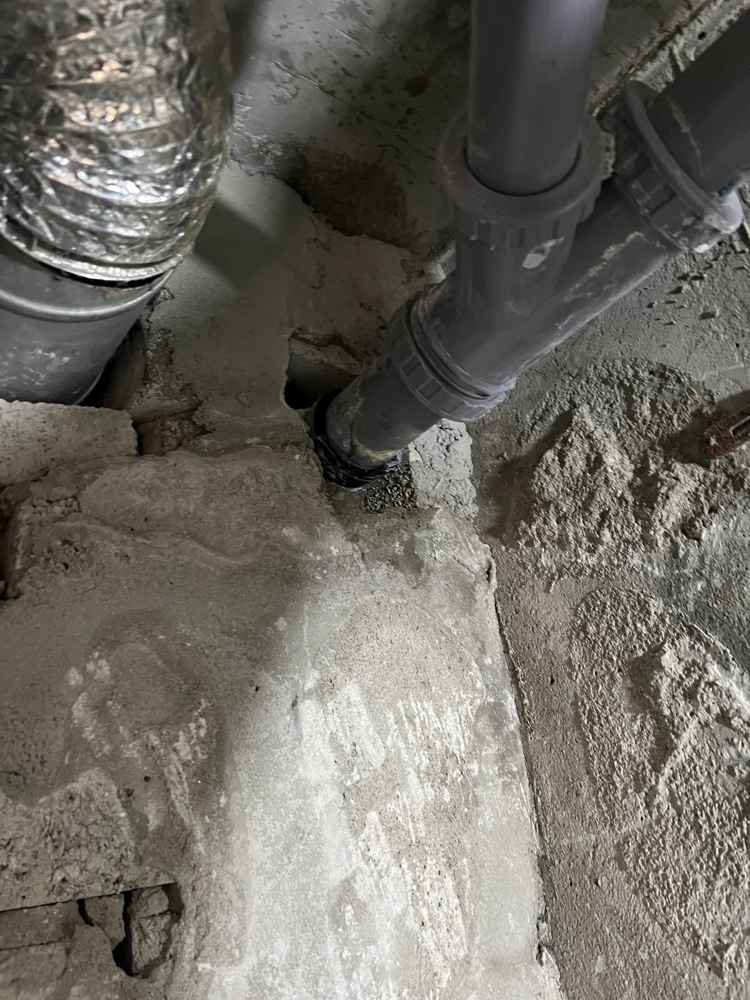
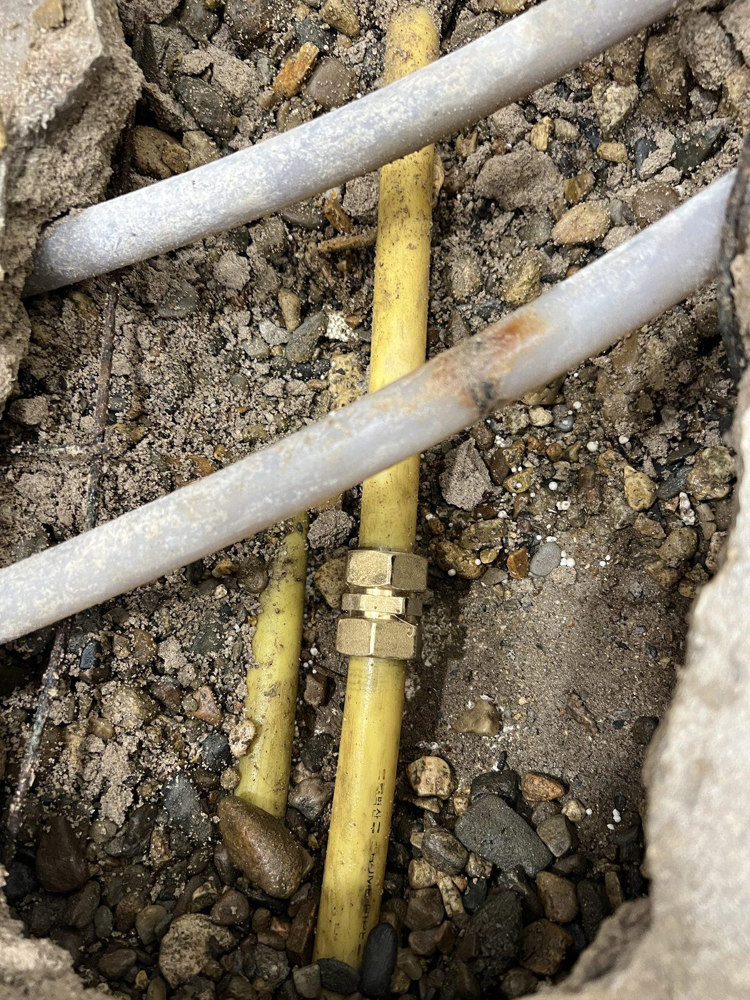
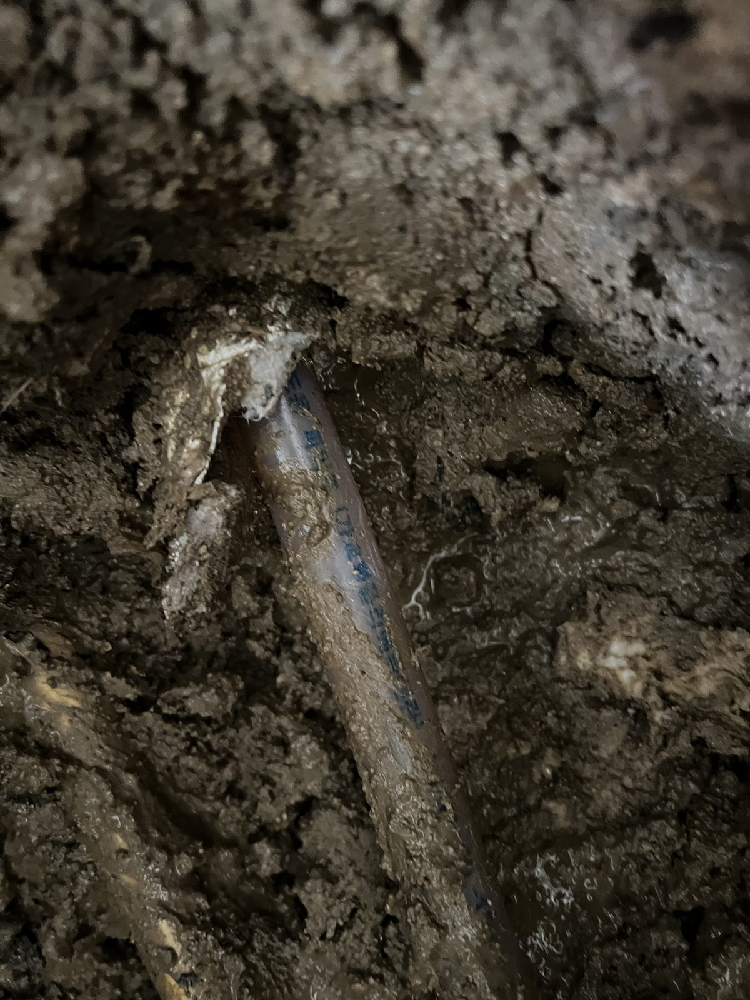
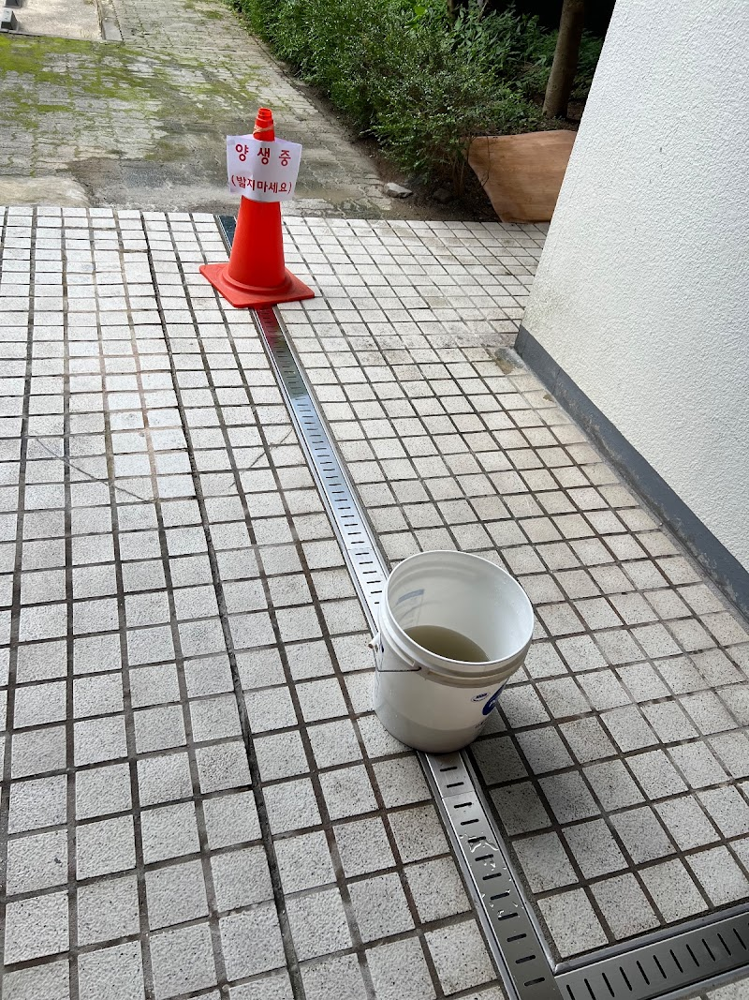

← 현장 기록 목록
DAEJEON AREA RECORD
대전 중구 현장 기록
만물인테리어가 대전 중구에서 작업한 현장 기록 5건을 최신순으로 모았습니다. 각 기록에 적힌 동네·단지와 작업 내용 그대로이며, 동·호수와 고객 정보는 공개하지 않습니다.
- 기록
- 5건
- 누수·배관
- 5건
- 기록 날짜
- 2026-07-27 ~ 2026-11-12
글에 동 이름이 적힌 기록: 목동 2건 · 문화동 2건 · 문창동 1건

난방 분배기 교체 대전 중구 문창동 난방 분배기·밸브 교체｜분리부터 보온 마감까지 대전 중구 문창동 현장입니다. 보일러에 난방수 부족 표시가 뜬다는 연락을 받고, 천장 쪽 기존 난방 분배기를 떼어 낸 뒤 새 분배기와 밸브를 달고 보온재를 다시 감았습니다. 실제 사진 6장으로 소개합니다.
방수·설비 대전 목동 목양마을아파트 세면대 배관 공사｜천장 속 배수관 연결부 작업과 관통부 마감 대전 중구 목동 목양마을아파트 세면대 배관 공사입니다. 천장 안쪽의 세면대 배수 배관 연결부를 작업하고, 배관 고정 상태를 살핀 뒤 배관이 벽돌 벽을 지나는 틈을 폼으로 메웠습니다. 실제 사진 5장으로 소개합니다.
누수탐지·수리 대전 문화동 안방 난방관 누수, 손상 부위를 잘라 피팅으로 연결했습니다 대전 중구 문화동 주택의 안방 바닥 아래에서 작은 난방관 손상을 확인했습니다. 바닥을 열고 누수 부위를 절단해 피팅으로 연결한 뒤, 개방부를 미장으로 복구한 과정입니다.
누수탐지·수리 대전 문화동 마당 수도밸브 누수, 땅속 배관을 확인하고 문제 밸브 제거 대전 중구 문화동 주택 마당에서 젖은 토사와 매설 수도배관을 확인했습니다. 밸브 주변을 굴착해 문제 밸브를 제거하고 계량기 주변을 살핀 작업을 사진 순서로 정리했습니다.
방수·설비 대전 목동 트렌치 배수 시공 — 출입구 바닥에 물길을 만드는 과정 대전 목동 출입구 바닥에 트렌치 배수로를 설치했습니다. 부재를 놓아 위치를 살핀 모습부터 바닥 절개, 트렌치 본체 설치까지 실제 사진을 따라 공정별로 소개합니다.